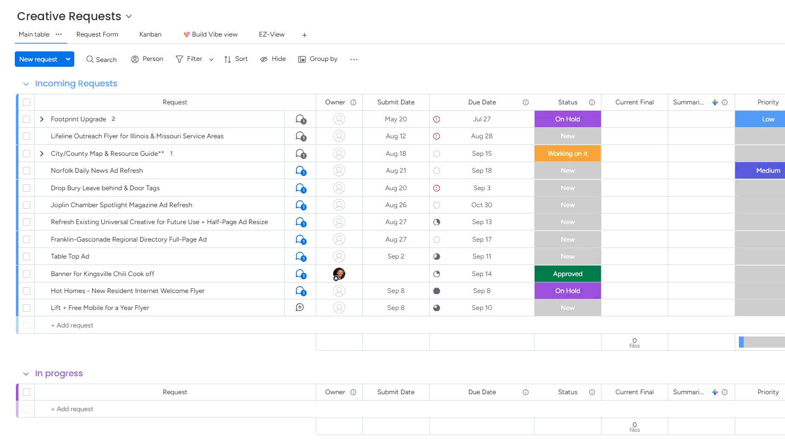

Sparklight
Monday Cleaner
forTurns messy Creative Requests exports into clean working files. Processing stays local in your browser.
Choose a Monday.com export
Drop the .xlsx file here, or choose it from your computer.
Monday.com export
QuickStart Guide
In Monday.com, export any Monday.com board to Excel, then bring that .xlsx file back to Monday Cleaner above. Creative Requests exports retain their specialized formatting; other boards use Universal mode.

Static preview shown. Replace assets/Exp-Mon.gif with the animated GIF to restore the looping guide.
Open QuickStart animation ↗